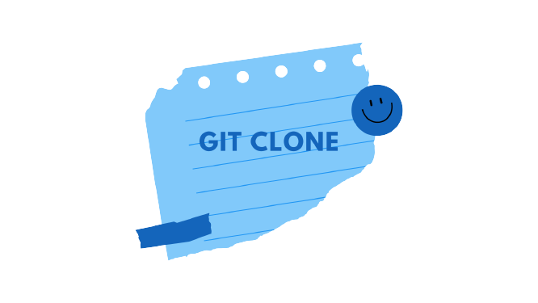
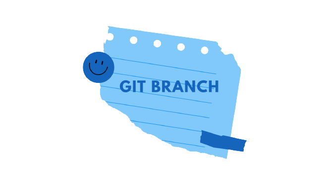

O GitHub é considerado é uma ferramenta essencial para engenheiros de software, com uma popularidade sem igual. Atualmente,
ele acomoda mais de 25 milhões de usuários. Isso significa
que há um número considerável de profissionais que estão procurando o GitHub para melhorar o fluxo de trabalho e a colaboração.
Em suma, o GitHub é um serviço baseado em nuvem que hospeda um sistema de controle de versão (VCS) chamado Git.
Ele permite que os desenvolvedores colaborem e façam mudanças em projetos compartilhados enquanto mantêm um registro
detalhado do seu progresso.
Link para o GitHub

Aqui, vamos examinar o comando git clone em detalhes. O git clone é um utilitário de linha de comando que é usado para selecionar um repositório existente e criar um clone ou cópia do repositório de destino.
Nesta página, vamos discutir opções de configuração estendidas e casos de uso comuns do git clone.
Uma das mais importantes funções do Git é o controle das ramificações (branches) do desenvolvimento que ajudam a melhorar a criação de um projeto. Por isso,
neste tutorial, mostraremos como usar os Git branches.

O comando git commit é uma das funções principais do Git. Antes de usar o comando git add é necessário selecionar as alterações que vão ser preparadas para o próximo commit.
Então, git commit é usado para criar um instantâneo das alterações preparadas em um cronograma de um histórico de projetos do Git.
Por isso, Pull Request quer dizer solicitação de puxar, em uma tradução livre.
E isso está diretamente ligado ao fato de que, ao enviar a notificação, as demais pessoas desenvolvedoras saberão
que precisam fazer o merge do código na branch principal.